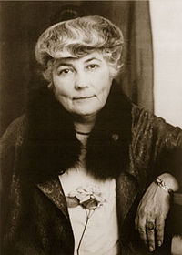

Шапошникова (Рерих) Елена Ивановна
Фото с сайта Википедия.

C сайта Ярославское Рериховское общество «Орион»
© Краткий философский словарь / А.П.Алексеев, Г.Г.Васильев и др.;Под ред. А.П.Алексеева – 2-е изд., перераб. и доп. –М.: ТК Велби, Изд-во Проспект, 2004.
Рерих Елена Ивановна (1879-1955)
В девичестве Шапошникова, правнучка М.И.Кутузова и двоюродная племянница М.П. Мусоргского, с 1901 г. жена и сподвижница Н.К. Рериха. Отличалась редкой красотой, интеллектом и высокой духовностью. Оригинальный мыслитель, устремленный к возрождению высших принципов бытия, утверждению роли женщины в эволюции человечества, особенно на новом витке – в эпоху Матери Мира. Напряженные духовные поиски и непрерывная настроенность на постижение глубинной мудрости Востока сыграли важную роль в осуществлении Центрально-Азиатской экспедиции Рерихов, в которой, кроме Николая Константиновича и Елены Ивановны, участвовали их сыновья: выдающийся востоковед Юрий Николаевич (1902-1960) и талантливый художник Святослав Николаевич (1904-1993).
Под руководством Великих Учителей (называемых в Индии Махатмами) Елена Ивановна участвовала в космическом эксперименте, направленном на духовное развитие человечества. В 20 – 30-е гг. под руководством Великих Учителей написала 14 книг духовно-философского учения Живой Этики (Агни-Йоги), утверждающей общечеловеческие духовно-этические ценности и вместе с тем концентрирующей в себе наиболее рациональные онтологические, космологические, психологические положения философской мысли Востока. Источниковая база учения Живой Этики - та же, что и Тайной Доктрины Блаватской, переводчиком которой была Е.И.Рерих.
В настоящее время в разных странах мира существует международное рериховское движение, философско-теоретической основой которого является учение Живой Этики.